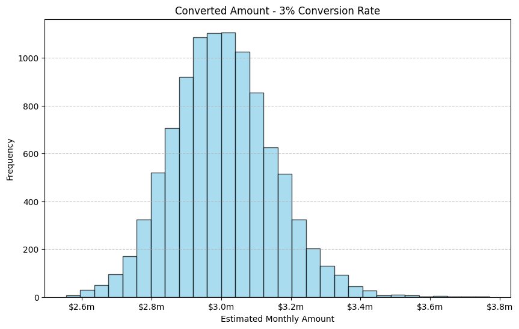
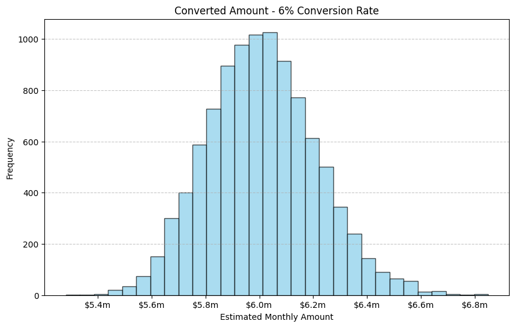
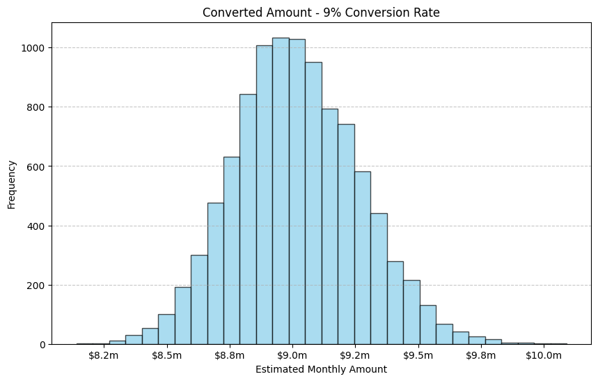

Case study · Interactive
Monte Carlo revenue simulation
Before committing call-team capacity to an outreach campaign, we wanted the realistic range of revenue outcomes — not a single average. This Jupyter notebook simulates thousands of campaign runs to answer: given N merchant leads and an assumed conversion rate, what does converted monthly volume look like?
Live
Run the simulation yourself
The same model the notebook runs, re-implemented in your browser. Pick a campaign size and conversion rate — each trial resamples the lead pool and applies a per-lead conversion draw.
Amounts are drawn from the same log-normal distribution as the notebook’s synthetic sample (median ≈ $1,000, clipped to $25–$250K). The notebook runs 10,000 trials per scenario; the browser default is 1,000 for responsiveness.
The notebook
The analysis, cell by cell
Monte Carlo simulation models uncertain outcomes by running numerous trials with random inputs. Instead of asking “what is the expected revenue,” each trial answers “what could one campaign plausibly look like” — and 10,000 trials together give the distribution: mean, spread, and worst/best case. The output was used to size campaigns and set expectations with stakeholders.
Each trial bootstrap-resamples the lead pool (so the amount mix varies) and applies a Bernoulli conversion draw per lead (so conversion luck varies), then sums the converted amounts.
The simulation engine
Three small functions do all the work — expand to read the code.
run_simulation(data, conversion_rate, n_simulations=10000)
def run_simulation(data, conversion_rate, n_simulations=10000):
"""
Simulates lead conversions.
Parameters:
- data: DataFrame containing transaction amounts.
- conversion_rate: Probability of conversion.
- n_simulations: Number of simulation runs.
Returns:
- results: List of total converted amounts from each run.
"""
results = []
for _ in range(n_simulations):
sampled_data = data.sample(frac=1, replace=True)
sampled_data['converted'] = np.random.choice([0, 1], size=len(sampled_data), p=[1 - conversion_rate, conversion_rate])
sampled_data['converted_amount'] = sampled_data['amount'] * sampled_data['converted']
results.append(sampled_data['converted_amount'].sum())
return results
report_results(results) · summary statistics
def report_results(results):
"""
Reports key statistics from simulation results.
"""
mean_amount = np.mean(results)
std_amount = np.std(results)
min_amount = np.min(results)
max_amount = np.max(results)
print(f"Mean Estimated Amount: ${mean_amount:,.2f}")
print(f"Standard Deviation of Amount: ${std_amount:,.2f}")
print(f"Minimum Estimated Amount: ${min_amount:,.2f}")
print(f"Maximum Estimated Amount: ${max_amount:,.2f}")
visualize_results(results, conversion_rate) · histogram
def visualize_results(results, conversion_rate):
"""
Displays a histogram of the results.
"""
def millions_formatter(x, pos):
return f'${x * 1e-6:.1f}m'
plt.figure(figsize=(10, 6))
plt.hist(results, bins=30, color='skyblue', edgecolor='black', alpha=0.7)
plt.title(f'Converted Amount - {int(conversion_rate * 100)}% Conversion Rate')
plt.xlabel('Estimated Monthly Amount')
plt.ylabel('Frequency')
plt.grid(axis='y', linestyle='--', alpha=0.7)
plt.gca().xaxis.set_major_formatter(FuncFormatter(millions_formatter))
plt.show()
Step 1 — scenario sweep over historical conversion rates
The simulation runs for all records using pre-defined empirical conversion rates of 3%, 6%, and 9%, modeling overall expected revenue based on previously observed conversion probabilities.
scenario sweep · 3 rates × 10,000 trials
for rate in [0.03, 0.06, 0.09]:
print(f"\nSimulation for Conversion Rate: {rate * 100}%")
simulation_results = run_simulation(df, rate)
report_results(simulation_results)
visualize_results(simulation_results, rate)



Step 2 — campaign-sized scenarios
The second pass targets specific subsets of the pool, pairing lead counts with the conversion rates each campaign type could realistically achieve — distinct marketing strategies with varying customer volumes and conversion likelihoods.
lead exercises · count × rate scenarios
lead_exercises = [
{'record_count': 10000, 'conversion_rate': 0.20},
{'record_count': 30000, 'conversion_rate': 0.15},
{'record_count': 50000, 'conversion_rate': 0.10}
]
exercise_results = []
for exercise in lead_exercises:
results = run_simulation(df.sample(n=exercise['record_count']), exercise['conversion_rate'])
exercise_result = {
'Record Count': exercise['record_count'],
'Conversion Rate': exercise['conversion_rate'],
'Mean Amount': np.mean(results),
'Min Amount': np.min(results),
'Max Amount': np.max(results),
'Std Deviation Amount': np.std(results)
}
exercise_results.append(exercise_result)
results_df = pd.DataFrame(exercise_results)
| Leads | Conversion | Mean | Min | Max | Std dev |
|---|---|---|---|---|---|
| 10,000 | 20% | $3,575,081 | $3,093,707 | $4,108,490 | $146,556 |
| 30,000 | 15% | $8,227,917 | $7,319,252 | $9,506,154 | $245,471 |
| 50,000 | 10% | $9,107,452 | $8,244,760 | $10,293,579 | $251,249 |
Conclusions
A focused 10K-lead campaign at a 20% conversion rate is worth roughly a third of a 50K-lead campaign at 10% — with a much smaller call-team commitment. Having the full distribution (not just the mean) made it possible to plan against the downside case rather than the average, and the spread quantified how much of the outcome is luck versus campaign design.
The simulation reduced uncertainty in resource allocation and gave stakeholders defensible best/worst-case bounds for each campaign option.
Source & data. The full notebook, a synthetic sample dataset (the original warehouse extract is not public), and the script that generated it are on GitHub: notebooks/monte_carlo_revenue_simulation